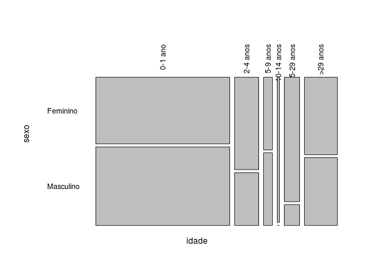
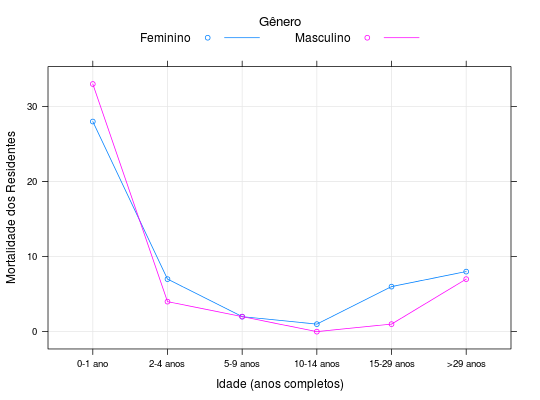

Censo realizado nos domicílios da comunidade polonesa de Dom Pedro, próximo a Curitiba, para se estudar a mortalidade dos residentes na colônia. O estudo foi realizado sobre três gerações no final do século XIX, contabilizando 99 mortes.
Um data.frame com 12 observações e 3 variáveis, em que
idadesexomortAndrade, D. F., Ogliari, P. J. (2010). Estatística para as ciências agrárias e biológicas com noções de experimentação (2nd ed.). Florianópolis, SC. Editora da UFSC. (Tabela 3.1, pág. 172)
data(AndradeTb3.1) str(AndradeTb3.1)#> 'data.frame': 12 obs. of 3 variables: #> $ idade: Factor w/ 6 levels "0-1 ano","2-4 anos",..: 1 2 3 4 5 6 1 2 3 4 ... #> $ sexo : Factor w/ 2 levels "Feminino","Masculino": 2 2 2 2 2 2 1 1 1 1 ... #> $ mort : int 33 4 2 0 1 7 28 7 2 1 ...(xt <- xtabs(mort ~ ., data = AndradeTb3.1))#> sexo #> idade Feminino Masculino #> 0-1 ano 28 33 #> 2-4 anos 7 4 #> 5-9 anos 2 2 #> 10-14 anos 1 0 #> 15-29 anos 6 1 #> >29 anos 8 7mosaicplot(xt, cex.axis = 0.9, las = 2, main = "")library(lattice) xyplot(mort ~ idade, groups = sexo, type = c("g", "o"), data = AndradeTb3.1, auto.key = list(title = "Gênero", cex.title = 1.1, lines = TRUE, columns = 2), xlab = "Idade (anos completos)", ylab = "Mortalidade dos Residentes")